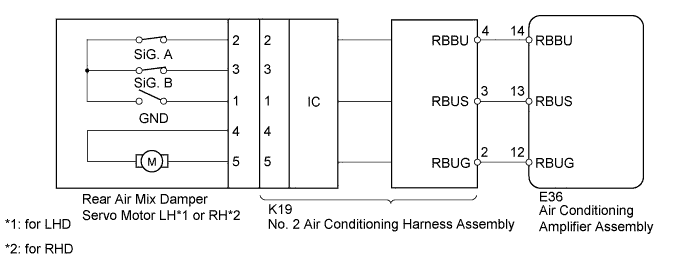
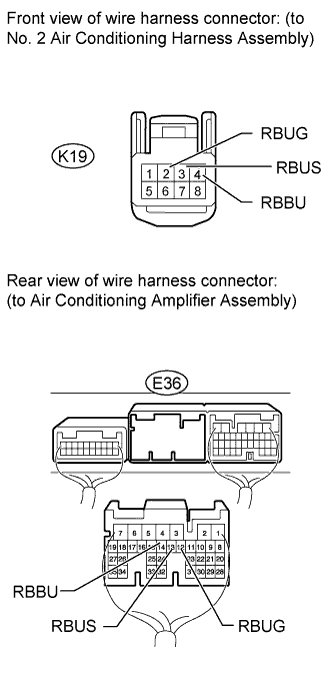

DTC B1447/47 Rear Air Mix Damper Control Servo Motor Circuit on Driver Side |
| DTC Code | DTC Detection Condition | Trouble Area |
| B1447/47 | The rear air mix damper position does not change even if the air conditioning amplifier assembly operates the rear air mix damper servo motor. |
|

| 1.READ VALUE USING INTELLIGENT TESTER (REAR AIR MIX DAMPER SERVO MOTOR) |
Use the Data List to check if the servo motor is functioning properly.
| Tester Display | Measurement Item/Range | Normal Condition | Diagnostic Note |
| A/M Servo Targ Pulse (Rear D) | Rear air mix damper servo motor target pulse / Min.: 9, Max.: 54 (for LHD) Min.: 8, Max.: 53 (for RHD) | for LHD
| - |
|
| ||||
| OK | ||
| ||
| 2.CHECK HARNESS AND CONNECTOR (NO. 2 AIR CONDITIONING HARNESS - AIR CONDITIONING AMPLIFIER) |
 |
Disconnect the K19 No. 2 air conditioning harness connector.
Disconnect the E36 amplifier connector.
Measure the resistance according to the value(s) in the table below.
| Tester Connection | Condition | Specified Condition |
| K19-2 (RBUG) - E36-12 (RBUG) | Always | Below 1 Ω |
| K19-3 (RBUS) - E36-13 (RBUS) | ||
| K19-4 (RBBU) - E36-14 (RBBU) | ||
| E36-12 (RBUG) - Body ground | Always | 10 kΩ or higher |
| E36-13 (RBUS) - Body ground | ||
| E36-14 (RBBU) - Body ground |
|
| ||||
| OK | |
| 3.CHECK REAR AIR MIX DAMPER SERVO MOTOR (OPERATION) |
for LHD
Replace the rear air mix damper servo motor LH (Click here).
for RHD
Replace the rear air mix damper servo motor RH (Click here).
| NEXT | |
| 4.CHECK FOR DTC |
Clear the DTCs (Click here).
Check for DTCs (Click here).
|
| ||||
| OK | ||
| ||